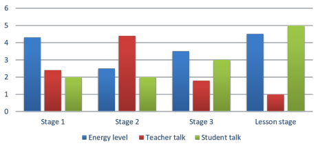
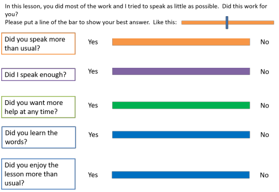
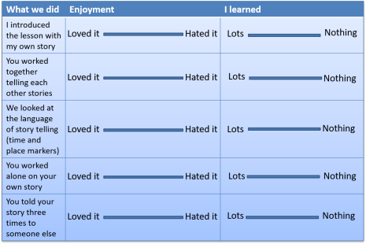
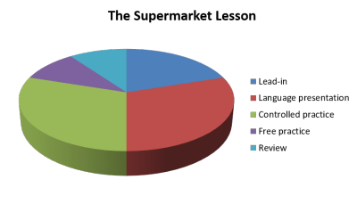

Development: gathering data and gauging progress

Why measure anything?
You can have the most elaborate and well-designed development programme in the profession, but, if you have no way of measuring whether what you are doing is having a positive or negative effect on your learners (or no effect at all), then you don't know if you are wasting your time.
If you can't measure it, you can't improve
it
Peter Drucker
So, here are some suggestions.
 |
Gathering data and stimulating reflection |
There are lots of ways to gather data on your teaching or kick-start
a development programme. Keeping
a teaching diary and getting someone to come and observe you are two.
Can you think of some more?
Click here when you have an answer.
Here's a short list of ten. You may have come up with some others.
- Record your lesson(s)
- Get an observer to comment on your teaching
- Get students to comment on your teaching
- Keep a diary of your teaching experiences
- Try out something new in the classroom
- Discuss with colleagues
- Attend lectures / seminars about teaching / read books and journal articles
- Be a student yourself
- Observe others teaching
- Keep records such as notes made on lesson plans after teaching
We can take them one at a time and see what's meant. Some are obvious, some aren't.
- Record your lesson(s)
Most people now assume that this means on video but it isn't necessary to do that or be sophisticated. Video is helpful in many ways because it allows you to see what's happening. However, unless it's quite elaborate, you won't be able to see the whole room or the individuals in it and sound quality is, likewise, often an issue.
Audio recording is much simpler and less intrusive (it can even be done covertly) and there are few teaching settings in which an audio recorder of some sort is not available. You were present in the lesson, after all, and can visualise what was happening quite clearly when you play back the recording to yourself. Others will have more difficulty. - Get an observer to comment on your teaching
This is often a very powerful source of data but it is sometimes hard to set up in schools where everyone is busy and you need to make sure you have clear tasks for observers to do or they will just get an overall, and rather subjective, impression with not enough detail or focus for your purposes. - Get students to comment on your teaching
There are really only two ways to do this: face to face or via a questionnaire of some sort.
Face to face is often better because you can refine the questioning as you go along and respond to what people say by asking them to clarify or expand. You don't need to do this with the whole of large classes. You can select a few people as a representative focus group or ask for volunteers. You still need a clear, focused set of questions to ask, however. - Keep a diary of your teaching experiences
This requires a bit of discipline and structure but it can be finely focused because you can choose what to record and how often to record it. - Try out something new in the classroom
Again, this doesn't need to be elaborate. It can be as simple as trying out a new drilling technique or using Dictogloss or whatever. - Discuss with colleagues
If you can, get others involved in a development programme. That way, you can meet, say, once a week and bounce ideas around and share triumphs and disasters together. - Attend lectures / seminars about teaching / read books and
journal articles
This may not be an option where you live and work but, if it isn't, why not try setting up a self-help group to make mini-presentations or read and article and come to a meeting to discuss it? - Be a student yourself
It's a humbling and often informative experience to become a language student yourself. It can also focus you on real difficulties. Try learning a new language from scratch. - Observe others teaching
Again, in busy schools and institutions, this is often hard to arrange (as is finding volunteers) but if you have a self-help group set up, you can observe each other so everyone gets a chance to 'get their own back'. - Keep records such as notes made on lesson plans after
teaching
This is less elaborate than keeping a diary and simply requires you to take a few minutes at the end of each lesson (or during it, if you have a bit of space) to make a few notes on what went right, what didn't and what changes you should make. You don't have to do it for every lesson, of course.
Ideas 5, 7 and 8 above are just ways to get you started but
the rest are proper data-gathering procedures. We'll focus
on those here.
In this table look through the procedures on the left, make up
your own mind what it's good for and whether there are
advantages and drawbacks and then click on the
 to reveal some comments.
to reveal some comments.
| Record your lesson(s) |
Helpful for almost
everything but especially for focusing on certain kinds
of behaviour like instruction giving and correction. |
| Get an observer to comment |
This can be helpful, especially if you want to focus on particular, clearly defined aspects of your teaching and can design a task making the observer really focus on one or two aspects only. |
| Get
students to comment |
This is very direct and can be informative, especially in terms of the effects of changes on learning and motivation, but:
If you are, e.g., focused on changes to feedback routines, groupings or materials and techniques, you can learn a lot from how the learners evaluate the changes in terms of enjoyment and commitment but may learn less about how effective the changes and innovations are. |
| Keep a
diary |
It's simple, low-tech and doesn't require anyone else's
cooperation. It can also be entirely private. It
tends to be quite subjective and impressionistic,
however.
|
| Discuss with colleagues |
The
setting up of a self-help teachers' group is usually the
most time-consuming bit of the procedure but once done,
groups sometimes develop their own momentum.
If you have concerns and issues in common with others, this is clearly a very helpful procedure but if you are more concerned with personal goals that others don't share, it is less effective. |
| Observe
others |
Again, in busy environments, there may not be an easy
way to arrange such observations but you may be
surprised by how cooperative people can be. After
all, it's actually rather flattering to be asked by a
colleague to observe something he or she clearly thinks
you do well and can be learned from.
You need to have a very clear focus and know what you are looking for or you will just be a fly on the wall gathering impressions without any structure. |
| Make
notes on lesson plans |
This is easy and quick but your notes need to be
targeted rather than impressionistic. It assumes,
too, that you have a plan for every lesson (or at least
the ones where you are trying to develop new
approaches). It also requires a bit of discipline or it will get lost in the hurly-burly of day-to-day teaching. It is a very useful technique to focus on small changes and innovations. |
Examples
Some examples of data-gathering documents follow.
Additionally, there is some advice about how to write questionnaires and
the sorts of item-types which are appropriate in the in-service training
guide to conducting
a needs analysis. That section is not written with personal
professional development in mind but the considerations are the same and
you can adapt the procedures to get the data you want.
Observer tasks
These work well whether used by an observer or by yourself when reviewing a recording of some teaching.
You can, of course, write a questionnaire for an observer but simple tasks like this often produce cleaner results.
Charts
This can be an effective way to focus your observer (or you, if you are reviewing a recorded lesson) on what you want to discover. Start with a blank chart and three coloured pens to play with while the lesson progresses. You can also use a set of blank circles and make pie charts if that's easier. Clearly, you can vary the parameters to suit what you want to be the focus.

Simple tasks

etc. for the following stages.
Interaction charts
Again, these can be filled in by an observer or by you when you review a recorded lesson. You need to limit them to short phases or they become unmanageable.

Questionnaires for learners
Again, simple, attractive questionnaires which are for simple responses are often better than requiring written answers from learners because the data are easy to interpret.

This is another way of getting feedback from learners, lesson stage by lesson stage. Warning: learners are poor at remembering what they did! Get them to put a cross or a bar on the line.

Apportioning time
| Make a pie chart of a lesson you taught and recorded in some way. Something like this: | Then make another setting out the proportions of time you should have used. |
|  |
 |
Now re-teach the lesson (or a similar one) trying to keep a better balance.
In this section of the site, linked from the left-hand menu is a guide to doing useful classroom research. Go there for more help.
If you have invented an even better way of getting data about what you do in the classroom, send it to ELT Concourse.